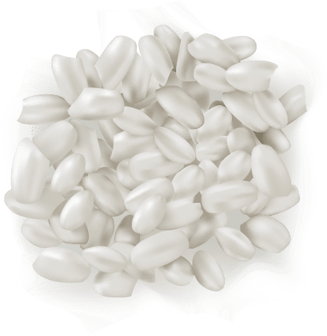

סודות של בישול
איך להכין אורז
המדריך הכללי להכנת כל סוגי האורז
בהמשך המדריך תוכלו למצוא את ההכנה המתאימה לכל סוג אורז לפי כמות מים וזמן בישול.

- שוטפים אורז
- מוסיפים אורז ומים לפי סוג האורז
- מוסיפים מלח
- מביאים לרתיחה
- מבשלים על אש יותר נמוכה זמן נדרש לפי סוג האורז
- מגישים
- שוטפים אורז
- מוסיפים אורז ומים לפי סוג האורז
- מוסיפים מלח
- מביאים לרתיחה
- מבשלים על אש יותר נמוכה זמן נדרש לפי סוג האורז
- מגישים

אורז בסמטי
בשנים האחרונות הופך האורז הבסמטי, שמגיע מהודו, ליותר ויותר אהוב בישראל, בזכות הניחוח והטעם האגוזיים שלו. גם לו, כמו לאורז הפרסי, גרגירים ארוכים ולבנים, אבל לעומת הפרסי, הבסמטי יותר עדין, ולכן נשבר יותר בקלות וצריך לנהוג בו בעדינות.העדינות הזאת היא גם חלק מהיתרונות שלו שהופכים אותו לאוורירי ונעים, כל עוד מכינים אותו נכון כמובן.
אורז מלא ארוך
האורז הארוך המלא דומה לזנים הארוכים שאתם מכירים, כמו הפרסי או הבסמטי, אבל הוא נמכר כשהוא עם הקליפה המעט כהה שלו. בזכות הקליפה הוא עשיר יותר במינרלים ובסיבים תזונתיים, רק צריך שיש לו טעם חזק יותר שלפעמים צריך להתרגל אליו. אפשר להשתמש בו בכל מתכון שמתאים לאורז לבן, כמו ממולאים, כדי להפוך אותו לבריא ומזין יותר.

אורז יסמין
אורז יסמין הוא האורז האהוב ביותר בתאילנד, והוא דומה לאורז הבסמטי המוכר והפופולרי. כמו הבסמטי, גם ליסמין גרגירים ארוכים ולבנים עם טעם אגוזי עדין וטעים. הוא מכיל פחות עמילן מהבסמטי ולכן קל להכין איתו אורז “אחד אחד” – הכי אוורירי שיש. היסמין מתאים בעיקר למתכונים בניחוח אסיאתי, למנות שבהן האורז קר וצריך להישאר אחד אחד ועדיין רך ונעים, ולכל מנה שאתם רוצים שהאורז יהיה רך ועדין.
